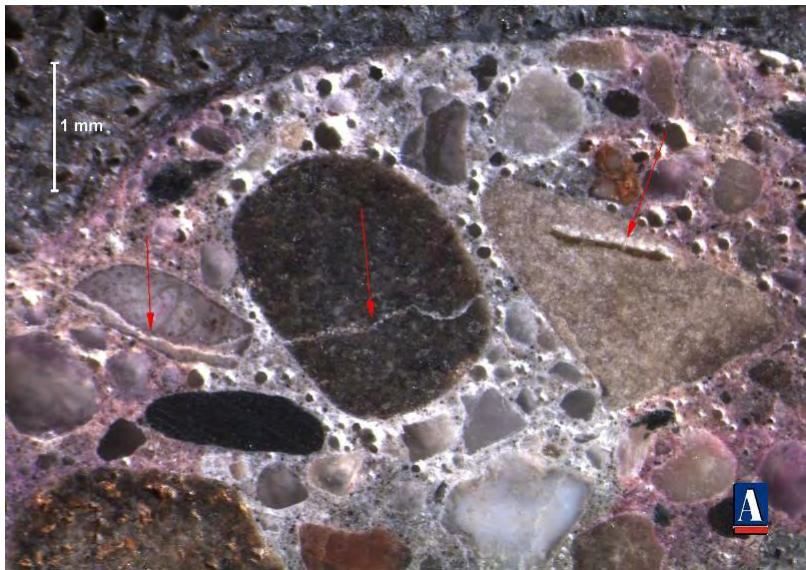
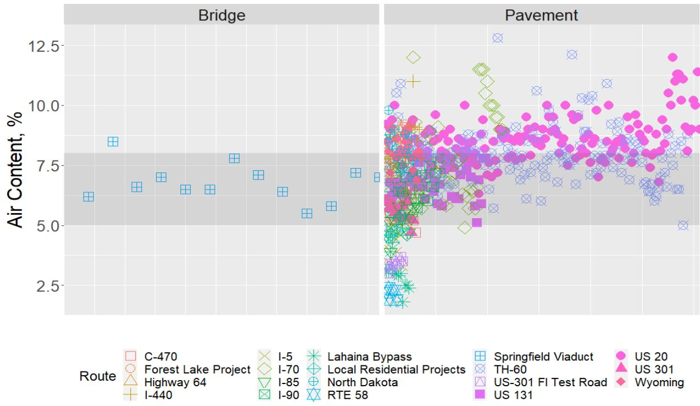
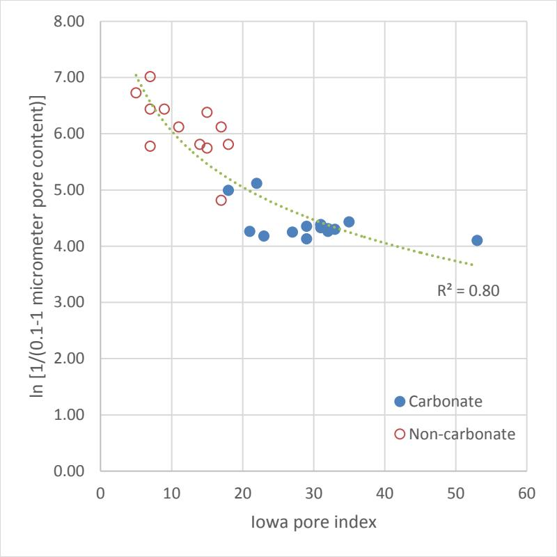
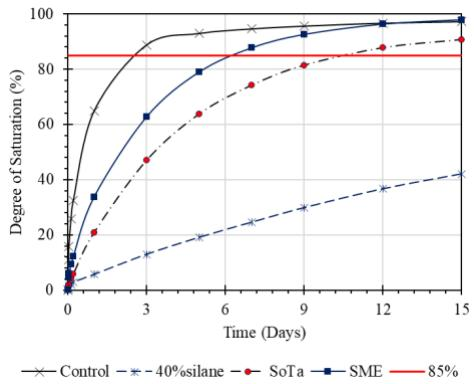
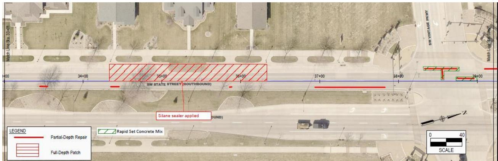
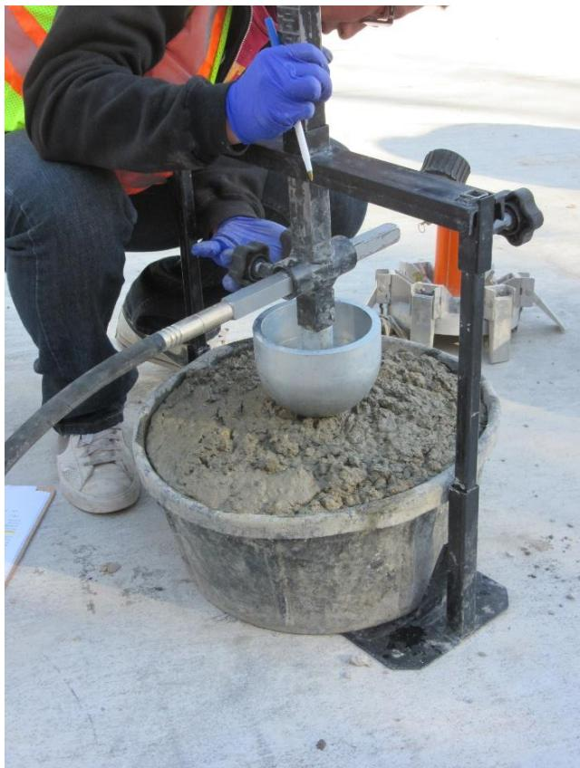

Joint Deterioration Prevention
Joint Deterioration Prevention is a strategic response to mitigate Premature Joint Deterioration by addressing issues such as faulting and spalling [4]. This approach involves the installation of load transfer devices, including dowel bars or smooth round bars, which are critical for providing adequate load transfer and preventing joint failure [4]. By ensuring these components function correctly, engineers can reduce the rapid deterioration often seen at joints due to concentrated stress points and moisture exposure [4]. It represents a comprehensive approach to preventing premature joint deterioration in concrete pavements through modified mixture designs, improved construction practices, and innovative test methods. The M-QMC mixture design represents a practical implementation of prevention strategies based on multi-year, multi-university research findings.
Sources (8)
Research Foundation and Deterioration Mechanisms
Aggregate-related freeze-thaw deterioration, known as D-cracking, is driven by hydraulic pressure from freezing water that fractures aggregate particles and expels water into the surrounding paste at a rate exceeding its capacity to accommodate it [1]. These D-cracking mechanisms involve two distinct aspects: first, hydraulic pressure from freezing water inside the aggregate particle must be sufficient to fracture the aggregate itself, and second, the expelled water exerts pressure on the surrounding cement paste at a rate that may exceed its capacity to accommodate it [2]. The maximum destructive pressure resulting from this process depends on aggregate permeability, pore structure, particle size, and the environmental rate of freezing [1].
 Frost Damage Associated with Concrete Aggregate: D-cracking at a Pavement Joint Intersection (left) and Fractured Carbonate Aggregate (right) [1]
Frost Damage Associated with Concrete Aggregate: D-cracking at a Pavement Joint Intersection (left) and Fractured Carbonate Aggregate (right) [1]
Additionally, the use of magnesium and calcium chloride deicers at approximately 40°F triggers a chemical reaction that produces expansive calcium oxychloride, causing paste cracking and joint deterioration [3]. Implementing a 30 to 35 percent fly ash dosage can potentially reduce the formation of this expansive compound by up to 50 percent [3]. To address such issues, advanced joint analysis tools utilize finite element modeling (FEM) to predict joint deterioration, pumping, and faulting under traffic and climatic loadings [4]. This research is supported by a multi-year, multi-university research plan and an FHWA effort to develop more effective specifications based on critical properties, as seen in the conclusions from the Investigation of Deterioration of Joints in Concrete Pavements by Taylor et al. 2016.
 Relationship between fly ash replacement dosage and oxychloride amount [3]
Relationship between fly ash replacement dosage and oxychloride amount [3]
Mixture Design Modifications
Mixture design modifications include maintaining a maximum w/cm ratio of 0.42 or lower (M-QMC design: 0.40), ensuring a minimum air content of 5% behind paver, and utilizing a fly ash dosage of 30-35% Class C to mitigate calcium oxychloride formation. For cold-weather placement, the minimum cement content is 400 lb/yd3, while the recommended paste-to-aggregate voids ratio is 125-175% (M-QMC: 200% due to cracking risk). In regions utilizing reactive fine aggregates such as chert, mitigation strategies must rely on supplementary cementitious materials (SCMs) like Class F fly ash, ground granulated blast furnace slag (GGBFS), or silica fume to counteract alkali-silica reactivity (ASR) [5]. Ternary concrete mixes utilizing blended cements can optimize SCM mitigation by balancing multiple supplementary materials, thereby avoiding the risks associated with high volumes of any single SCM [5].

ASR filled cracks and rims [5]Adequate freeze-thaw protection requires a uniform air void system where the bubble spacing factor is maintained at 0.008 inches or less to prevent vulnerability to cracking [5]. Furthermore, optimized aggregate gradations coupled with judicious use of supplementary cementitious materials (SCMs) can reduce paste volume and cement content without compromising workability, thereby lowering CO2 emissions and shrinkage potential while extending pavement service life [6].

Air content for bridge and pavement projects [6]Aggregate Selection and Testing
To account for varying deterioration risks, the Iowa DOT utilizes an overall quality number for aggregate acceptance that combines results from the pore index test, X-ray fluorescence (XRF) for clay content, and X-ray diffraction (XRD) or thermogravimetric analysis (TGA) for mineralogy [1]. This composite metric weights factors differently based on whether the aggregate is pure limestone, intermediate dolomite, or pure dolomite [1]. Furthermore, a combination of low absorption (less than 1.75%) and high specific gravity (greater than 2.60) suggests a low secondary pore index (SPI) value, which indicates good durability performance even if carbonate content limits are exceeded [1].
 Results of the Iowa Pore Index Test—Secondary Pore Index [1]
Results of the Iowa Pore Index Test—Secondary Pore Index [1]
The volume of micropores in coarse aggregate exhibits a fairly strong correlation with freezing-thawing performance, as aggregates containing high volumes of micropores demonstrate significantly poorer durability compared to those with low micropore volumes [2]. Consequently, while the Iowa pore index test serves as a supplemental decision-making tool for aggregate selection, it requires firm correlation with performance metrics to effectively differentiate between durable and non-durable aggregates [2].

Relationship between micropores and Iowa pore index [2]Construction Practices and Temperature Protection
To ensure durability, construction practices must include effective curing to reduce permeability, the consideration of heated water for cold-weather concrete placement, and the availability of blankets to protect concrete from freezing. While contractors naturally adjust water content for workability, excessive water-cement ratios—particularly those exceeding 0.50 at construction joints—significantly reduce resistance to freeze-thaw deterioration and accelerate early cracking [5]. Furthermore, surface microcracking can result from plastic shrinkage due to insufficient curing or poor workability caused by gap gradations and dry absorptive aggregates [5].
 High water-cement ratio and cracking left half of the cold joint [5]
High water-cement ratio and cracking left half of the cold joint [5]
Joint Design and Sealing Strategies
Doweled joints are designed to achieve a service life of 60 years in relatively heavy traffic conditions [4], whereas concrete pavement overlays require specialized joint designs optimized for a performance life of 20 years or less, as standard doweled joints are cost-prohibitive for these shorter design periods [4]. To prevent base course or subgrade erosion that leads to faulting and loss of support, joint sealing is utilized to minimize precipitation penetration [4]; however, joint sealing practices are being re-evaluated due to questions regarding their ability to extend pavement life, with some agencies replacing seals with narrow sawcuts [4]. Penetrating sealers can mitigate joint deterioration by reducing moisture and chloride ion penetration, which extends the time to critical saturation for freeze-thaw resistance and limits the potential for calcium oxychloride formation [7]. The efficacy of hydrophobic sealers in reducing early water absorption is governed by their ability to increase the substrate’s water contact angle, which significantly lowers capillary suction potential according to the Young-Laplace equation [7].

Degree of saturation for concrete specimens: mAir (top left), mOXY (top right), and mDcrack (bottom) [7]Joint sealing protocols may involve applying penetrating sealers to clean joints prior to filling them with hot pour joint sealant, or utilizing early-entry saw cuts that remain unsealed and untreated by other fillers [7]. Field applications demonstrate that silane-based penetrating sealers can be applied at rates between 200 ft²/gal and 330 ft²/gal using a one-gallon tank sprayer, targeting both the saw cut interior and approximately six inches alongside the joint [7].

Location of sealer test section on SW State Street, Ankeny [7]Overlay Construction Specifications
For concrete overlays less than 3.5 inches in depth, the inclusion of fibrillated polypropylene fibers is critical to increase performance reliability and compensate for strict construction depth control requirements [8]. While transverse and longitudinal joint spacing in concrete overlays should not exceed twice the overlay depth in inches for standard mixes, larger spacings may be permitted when specific fiber types are incorporated [8].
To manage contraction joints, early-entry or ‘green’ sawing is required to cut them to a 1/8-inch width as soon as the concrete supports the operation, and these specific joints are left unsealed [8]. Additionally, the maturity method is utilized to monitor strength gain and determine the precise timing for opening the pavement overlay to traffic [8].
Quality Control and Laboratory Testing
Various methods are utilized for quality control, including the VKelly test to assess workability in the laboratory design stage [3], the Box test to evaluate edge slump potential, a Super Air Meter to predict freeze-thaw durability, and calorimetry to monitor heat of hydration and setting time. For detailed pore structure identification, mercury intrusion porosimetry (MIP) provides very good correlations to absorption and pore index values, though it is generally not cost-effective for routine characterization testing compared to simpler methods like the Iowa pore index test [1]. Specifically, the Iowa Pore Index Test serves as a screening protocol for calcareous aggregates by combining chemical testing with pressure-driven water absorption measurements to identify materials susceptible to D-cracking [6].
 Cumulative Intrusion versus Pore Size (Specimen 56192-Carbonate) [1]
Cumulative Intrusion versus Pore Size (Specimen 56192-Carbonate) [1]
The vibrating Kelly Ball test (VKelly) is an innovative laboratory method used to assess concrete workability during the mixture design phase and is proposed for inclusion in future specifications and quality control plans to validate field mix proportions [3]. Regarding durability, air-void system spacing factors between 0.008 inches and 0.012 inches are classified as marginal for freeze-thaw resistance, while values greater than or equal to 0.012 inches indicate poor protection [6]. Consequently, field assessments of hardened concrete cores have revealed that adequate fresh air content does not guarantee a protective air-void system, as spacing factors can remain marginal or poor despite meeting initial air content specifications [6].

VKelly test apparatus [3]Key Findings from West Des Moines Project
- M-QMC mixture performs as intended with improved deicing salt resistance
- 72% reduction in calcium oxychloride formation compared to conventional QMC
- Paste expansion rate far lower than QMC and C4 mixes
- No early-age cracking observed
- Test methods contribute useful information for specifications
Practical Implementation and Field Viability
- Modified Iowa DOT QMC mixture (M-QMC) successfully placed on five slip-form pavements
- Demonstrated field viability of prevention strategies
- Provides basis for future specification development
- Shows importance of integrated approach (mixture + construction + QC)
Connections
- Premature Joint Deterioration – Primary distress mechanism
- Calcium Oxychloride Formation – Key chemical reaction to mitigate
- Modified Quality Management Concrete – Practical mixture implementation
- Fly Ash – 33% dosage for oxychloride mitigation
- Deicing Salt Effects – Environmental trigger for deterioration
- Freeze-Thaw Durability – Related durability concern
- taylor-2012-investigation-deterioration-joints – Foundational research
References
- F. Bektas, K. Wang, and J. Ren, "Carbonate Aggregate in Concrete," Institute for Transportation, Ames, IA, 2015. [Online]. Available: https://www.intrans.iastate.edu/wp-content/uploads/2018/03/201514.pdf
- F. Bektas, W. Cai, and K. Wang, "Aggregate Freezing-Thawing Performance Using the Iowa Pore Index," Center for Transportation Research and Education, Ames, IA, 2016. [Online]. Available: https://www.cptechcenter.org/wp-content/uploads/2018/03/aggregate_freezing-thawing_using_Iowa_pore_index_w_cvr.pdf
- X. Wang, P. Taylor, and D. King, "Evaluation of Modified Concrete Mixture Proportions for the City of West Des Moines," National Concrete Pavement Technology Center, Ames, IA, 2016. [Online]. Available: https://www.intrans.iastate.edu/wp-content/uploads/2018/03/WDM_modified_concrete_mixture_proportions_w_cvr.pdf
- D. Harrington, R. Rasmussen, D. Merritt, T. Cackler, and P. Taylor, "Long-Term Plan for Concrete Pavement Research and Technology—The Concrete Pavement Road Map (Second Generation): Volume II, Tracks (FHWA-HRT-11-070)," National Center for Concrete Pavement Technology, Iowa State University, Ames, IA, 2012. [Online]. Available: https://www.fhwa.dot.gov/publications/research/infrastructure/pavements/pccp/11070/11070.pdf
- J. Grove, F. Bektas, and H. Gieselman, "Southeast Michigan Local Road Concrete Pavement Durability Study," National Concrete Pavement Technology Center, Ames, IA, 2006. [Online]. Available: https://www.cptechcenter.org/wp-content/uploads/2018/03/mi_pavement_durability.pdf
- J. Gross, J. Weiss, T. Ley, P. Taylor, N. Weitzel, T. Van Dam, G. Smith, and C. Jones, "Performance-Engineered Concrete Paving Mixtures," National Concrete Pavement Technology Center, Iowa State University, Ames, IA, Rep. TPF-5(368), 2022. [Online]. Available: https://www.intrans.iastate.edu/wp-content/uploads/2023/04/performance-engineered_concrete_paving_mixtures_w_cvr.pdf
- J. T. Kevern, G. Adil, P. Taylor, S. Sadati, and K. Wang, "Evaluation of Penetrating Sealers for Concrete," National Concrete Pavement Technology Center, Iowa State University, Ames, IA, Rep. TR-765, 2022. [Online]. Available: https://www.intrans.iastate.edu/wp-content/uploads/2022/06/concrete_penetrating_sealers_eval_w_cvr.pdf
- J. K. Cable and J. Williams, "Evaluation of Unbonded Ultrathin Whitetopping of Brick Streets," CTRE, Iowa State University, Ames, IA, Rep. TR-466, 2006. [Online]. Available: https://www.intrans.iastate.edu/wp-content/uploads/2018/03/whitetopping.pdf
Feedback on this page